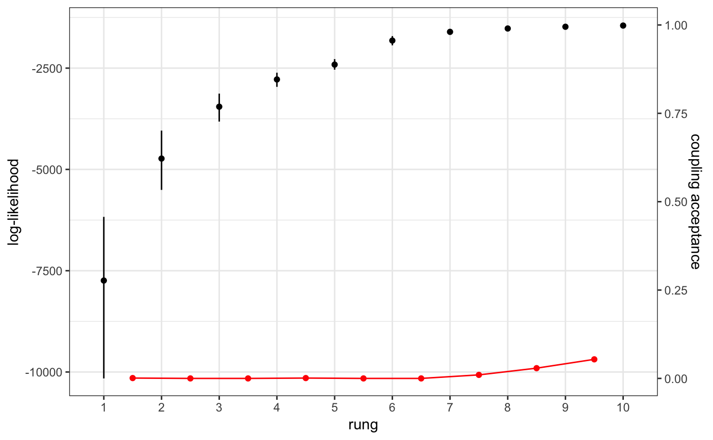
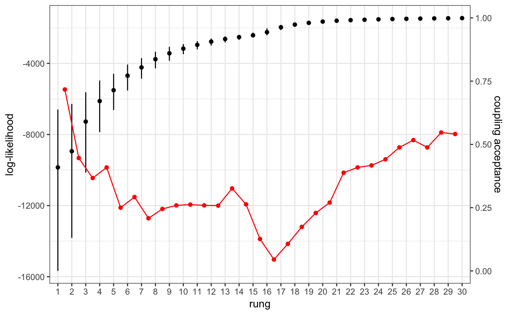

ensuring-good-mixing.RmdIn order for MCMC results to be reliable, it is important that the MCMC has “mixed” well. This vignette covers:
MCMC is a method for sampling from a given probability distribution called the “target” distribution. It works by making a series random moves from its current position, causing it to wander around and explore a range of parameter values. The series of values that we end up with is referred to as a “chain”. The probabilities of the random moves are carefully chosen to ensure that the length of time spent in any given parameter value is proportional to its probability under the target distribution. In a Bayesian setting the target distribution is almost always the posterior distribution, so what we end up with is a series of draws from the posterior distribution.
However, draws from the target distribution are not independent, as the next value in the chain depends on the current value. This leads to auto-correlation, which can cause the chain to move slowly and sluggishly through the space. If the chain is too sluggish then it may end up spending too much time in one region of parameter space by pure chance, meaning we end up with a skewed picture of the posterior distribution. In more severe cases we might find that there are large “valleys” in the target distribution that the chain struggles to cross, in which case some parts of the posterior might be missed entirely. Both of these situations are referred to as bad mixing.
There are several factors that influence mixing, including:
The first two factors are structural, in that they are a consequence of the mathematical model assumed, but the last three are algorithmic and can be modified by varying the MCMC approach.
Unfortunately, mixture models like the one that underpins MALECOT are among the more difficult problems in terms of the structural aspects. The posterior distribution is typically very lumpy, with large valleys that the MCMC struggles to traverse, and parameters are also highly correlated meaning we have to be clever about how we propose new values. Some of the algorithmic methods used to overcome this in MALECOT are described below.
MALECOT uses a combination of Metropolis-Hastings and Gibbs sampling to propose new moves. In Metropolis-Hastings we propose new parameter values by drawing from a proposal distribution around the current value, and this proposed value is then either accepted or rejected. If the proposal distribution is too tight then moves will be very small, meaning almost every move will be accepted but it will take a long time to traverse the parameter space. On the other hand, if the proposal distribution is too spread out then most proposed values will tend to be in low likelihood regions, meaning almost every move will be rejected and the chain will stay put. We can therefore use the acceptance rate as a running measure of how well our proposal is doing. If too many moves are being accepted then we increase the proposal variance, and if too many moves are being rejected then we decrease the variance. This is a form of adaptive MCMC.
In MALECOT we use the Robbins-Monro algorithm to tune the proposal distribution towards a particular target acceptance rate. It has been proved theoretically that the optimal acceptance rate under certain assumptions is around 23% (see Rosenthal (2011)), so we target this value. This method is used for all Metropolis-Hastings update steps, which includes; allele frequencies, COI, error rates, and mean COI per subpopulation.
As described in another vignette, MALECOT has the option to use multiple temperature rungs in a method called thermodynamic MCMC. These temperature rungs are central to the GTI method of estimating the model evidence, but they can also be useful in improving mixing through a technique called Metropolis coupling. In Metropolis coupling we propose swaps between different temperature rungs, such that the hot chain becomes the cold chain and vice versa. This proposed moved is accepted or rejected according to a ratio built from the relative likelihoods, similar to ordinary Metropolis-Hastings. This can drastically improve mixing, as the hot chains are free to explore a wider space than the cold chains, allowing them to traverse large valleys in the ordinary posterior, and the coupling step then bubble sorts these results up to cold chain. Any time we are performing thermodynamic MCMC we have access to these extra temperature rungs, and so we may as well implement Metropolis coupling, and for difficult problems we may consider implementing this method even if we are not interested in the model evidence.
To explore Metropolis coupling in action we will require some simulated data, a new MALECOT project, and an example parameter set:
# simulate data
mysim <- sim_data(data_format = "biallelic", n = 100, L = 24, K = 3)# create project and bind data
myproj <- malecot_project()
myproj <- bind_data_biallelic(myproj, df = mysim$data, ID_col = 1, pop_col = 2)
# create parameter set
myproj <- new_set(myproj)We then run the MCMC with multiple rungs - in this first example we will use 10 rungs. The coupling_on argument ensures that Metropolis coupling is turned on (the default setting).
# run thermodynamic MCMC
myproj <- run_mcmc(myproj, K = 3, burnin = 1e4, converge_test = 1e2,
samples = 1e3, rungs = 10, coupling_on = TRUE,
pb_markdown = TRUE)## Running MCMC for K = 3
## Burn-in phase
##
|
|=================================================================| 100%
## converged within 200 iterations
## Sampling phase
##
|
|=================================================================| 100%
## completed in 2.69601 seconds
##
## Processing results## Total run-time: 3.09 secondsIn the model comparison tutorial we saw how to plot the log-likelihood quantiles at each temperature rung using the plot_loglike() function. Here we will use the plot_coupling() function, which produces a variation of the same plot:
# plot coupling rates
plot_coupling(myproj, K = 3)
The red points give the Metropolis-coupling acceptance rates between the two temperature rungs to either side of that point (values to be read off the right-hand y-axis). In this example we can see that almost all acceptance rates are zero, or very close to zero. This can be understood by looking at the overlap of different log-likelihood quantiles - for example the quantiles of the first and second rungs. If there is little or no overlap between quantiles then the two chains are exploring quite different distributions. There may be times that the hotter chain gets lucky and explores a parameter combination with high log-likelihood, and simultaneously the colder chain may get unlucky and explore a parameter combination with low log-likelihood, but the log-likelihood of the colder chain will still on average be so much higher than the hot chain that there is very little chance of a proposed swap being accepted. The jump in temperature between rungs is just too large for swaps between rungs to occur.
Now compare this with the result obtained by running the same MCMC with 30 rungs:
# run thermodynamic MCMC
myproj <- run_mcmc(myproj, K = 3, burnin = 1e4, converge_test = 1e2,
samples = 1e3, rungs = 30, pb_markdown = TRUE)## Running MCMC for K = 3
## Burn-in phase
##
|
|=================================================================| 100%
## converged within 200 iterations
## Sampling phase
##
|
|=================================================================| 100%
## completed in 7.7244 seconds
##
## Processing results## Total run-time: 8.12 seconds# plot coupling rates
plot_coupling(myproj, K = 3)
Now there is extensive overlap between quantiles, meaning swaps between rungs have a good chance of being accepted. We can see this in the acceptance rates, which appear to be correlated with the degree of overlap between quantiles. Note that - unlike in standard Metropolis-Hastings - we are not aiming for an intermedate acceptance rate of 23% here, rather the higher the acceptance rate the better.
When looking at this plot we want to ensure that the acceptance rate never dips to zero. If the acceptance rate in the plot above hit zero in the middle then information would be flowing between rungs to the left of this break, and between rungs to the right of this break, but not over this break. This would mean the parameter space explored in the hottest chains was not able to bubble-sort up to the cold chain, and so these chains would be doing nothing to improve mixing. In the example above we can be fairly confident that the MCMC has explored the space well, subject to the usual checks of ESS, sampling iterations and so forth.